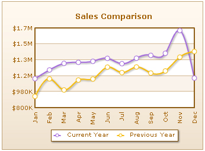

Spline charts are a specialized form of line charts that display smooth curves through the different data points. It integrates all the characteristics of a conventional line chart except for the fact that unlike line charts, which connect data points with straight lines, spline charts draw a fitted curved line to join its data points.
Spline charts can be used for plotting data that requires the usage of curve-fitting e.g. Impulse-response chart, product life cycle chart and so on. It also finds its significant implementation in designing Pareto charts.
Currently, PowerCharts v3 offers four types of spline charts:
- Single-series Spline 2D Chart
- Single-series Spline Area 2D Chart
- Multi-series Spline 2D Chart
- Multi-series Spline Area 2D Chart
Let's take a closer look at each of them:
As the name suggests, a single-series spline 2D chart draws a single fitted curve through the data points. Similarly, a single-series spline area 2D chart is nothing but a conventional area chart with a smoothened curve through each data point in the series.
On the other hand, multi-series spline 2D charts and multi-series spline area 2D charts allow you to plot multiple series of spline and spline area charts respectively.
Shown below are the examples of each of the chart:
 |
 |
| Single-series Spline 2D Chart | Single-series Spline Area 2D Chart |
|  |  |
| Multi-series Spline 2D Chart | Multi-series Spline Area 2D Chart |
How to Provide Data
The XML/JSON structure for a single-series spline or area chart is identical to any single-series chart of FusionCharts v3 suite. Similarly, the data format for a multi-series spline and area charts are same as that of a normal multi-series chart of the FusionCharts v3 suite.
Limitation in Connecting Null Data
PowerCharts spline and spline area charts do not support joining of empty data points in the chart. That means, if your chart does not contain data at a particular point, the data points cannot be connected to each other and will appear as a broken dataset.